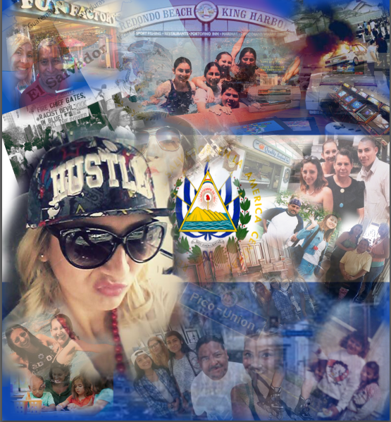
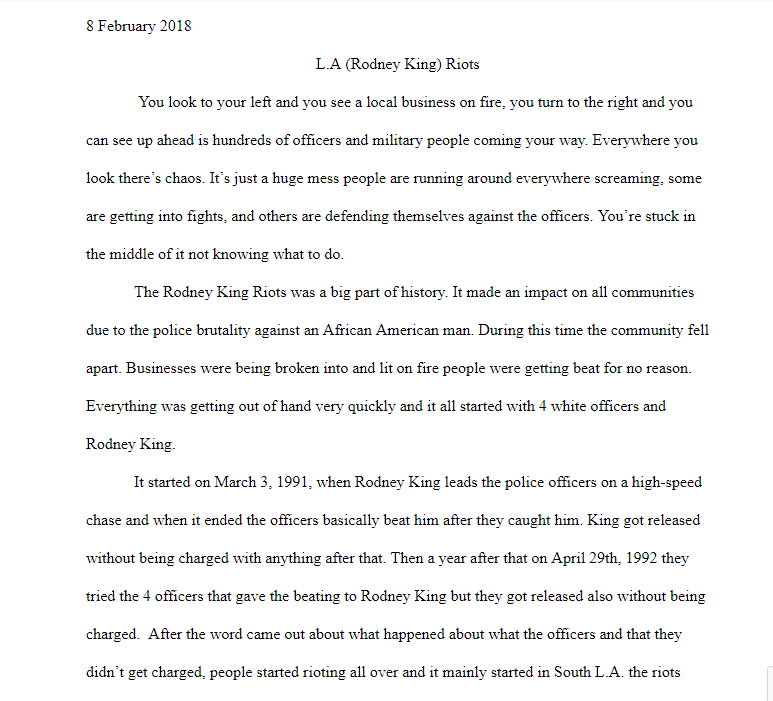
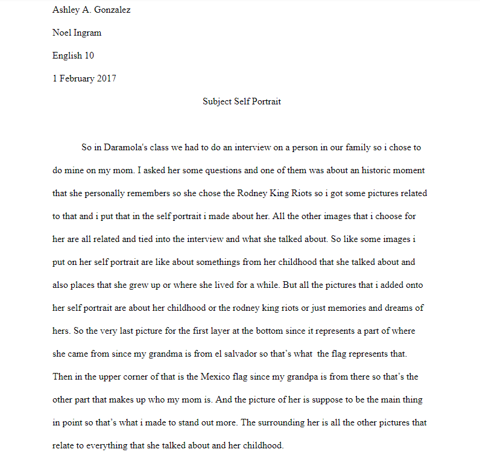
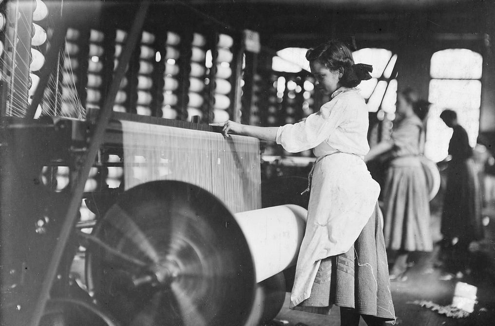
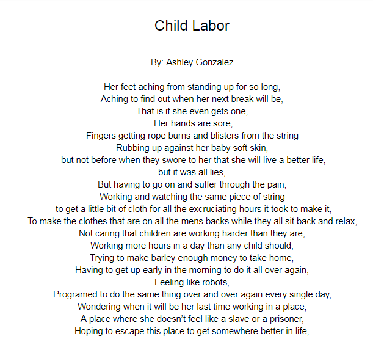
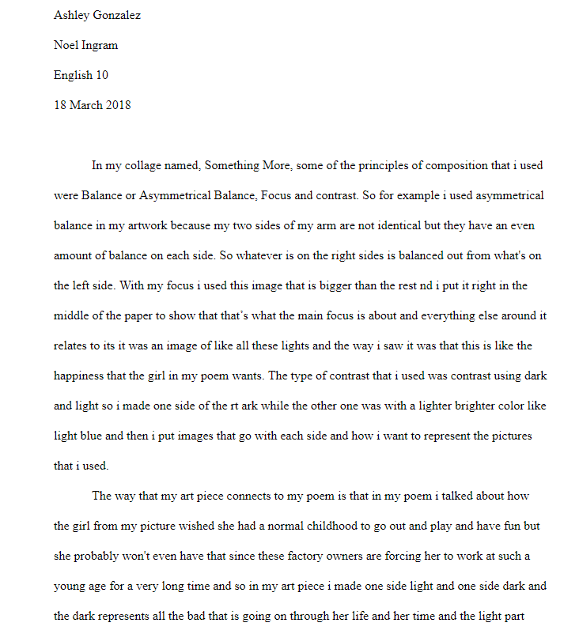
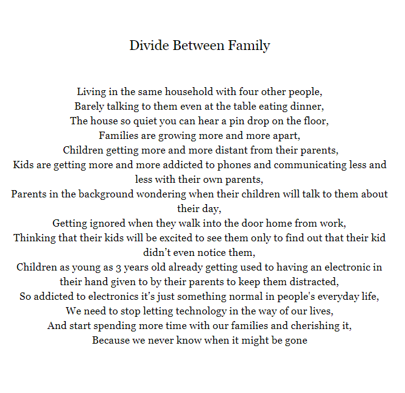
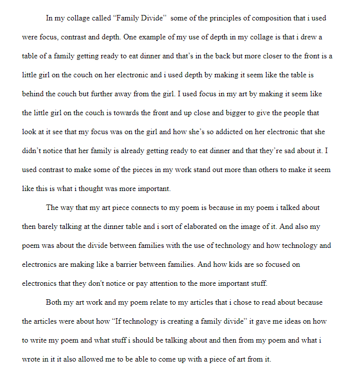

Humanities 10
Coding The Past
Here is the work that I have done for project 1 in Noels class which include my essay and my Photoshop work.
Subject Self Portrait
One of the projects that we had to do in this class was a Subject Layered Portrait. So from the subject that we choice to do our interview on in Daramola's class we created a self portrait of them and used images that relates to them and what they talked about in the interview. We each made a unique portrait.

Once you click the image it will take you to a new tab and from there you will download the image to view it.
My Essay
This is my essay that i did about a topic that related to something thatr my interviee talked about. So for me i decided to right about the historical event that she talked about which was the Rodney King Riots. Clicking the image down below will take you to the document so you can read the whole essay.

Subject Self Reflection
This is my Subject Self Reflection. It's basically what it's called but it's a reflection that we had to do about the subject layered portrait and we just talked about our process on making it, putting pictures in certain spots why we chose certain images that we used and how the images that we chose connect to our interviewee and the historical event that they talked about in the interview.

A Timely Solution
Here is the work for the second project that we did called Timely Solution. Some of the assignments that I had to do for this class was a poem and the poem had to be based on a imageo fchild labor then from there I had to come up with a collage that relates to my poem.
Primary Source

Child Labor Poem

My ArtWork

Artist Statement

Social Media + Family
Discription
Here
Poem

Family Divide

Artist Statement
